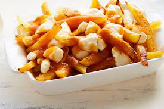

Home
Poutine

Description
This recipe is a very simple one but oh so delicious. A classic meal that
everyone can enjoy!
Ingredients
- Potatoes
- Gravy
- Chese curds
- Cooking oil
Steps
-
Wash the potatoes and cut them the size you desire, or approximatively
1/4 inch, skin on.
- Poor the cooking oil in a deep saucepan ort in a deep fryer.
-
Heat the oil until it reaches 340F on a thermometer and add the cut
potatoes.
-
Cook the fries for 10 minutes, then take them out and gently pat them
from the oil.
-
Bring the oil to 370F and cook again for 5-10 minutes or until golden.
- Drain the fries and put aside.
- Poor your beef gravy in a sauce pan and bring to ebullition.
-
Once the sauce is ready, put the fries in a plate, add the cheese curds
on top and then the gravy.
- Add toppings if desired (meat, olives, mushrooms, onions, etc.)
- Enjoy!